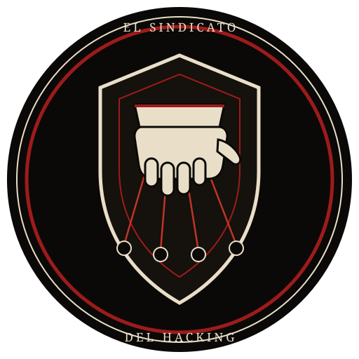
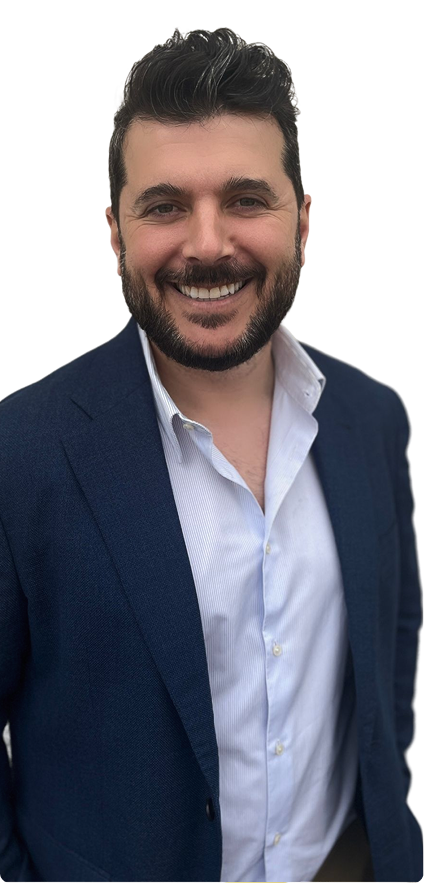
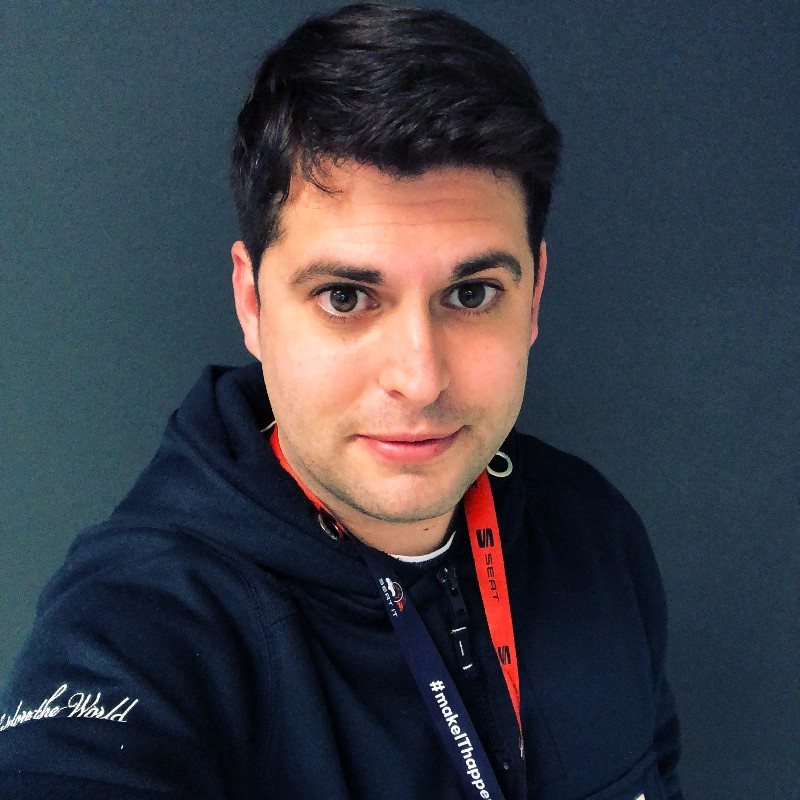
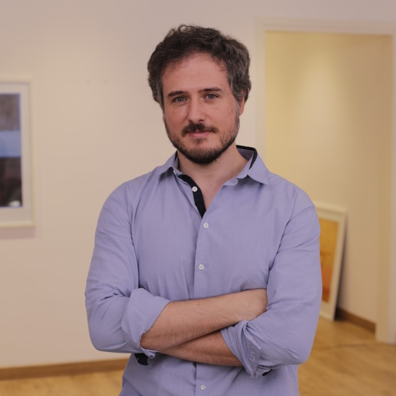

Amenazas y operaciones
Quién está detrás, qué busca y qué sabemos de verdad. Sin convertir una hipótesis en sentencia.

Ciberseguridad · famiglia · en español
Ciberseguridad sin humo. Historias del sector y una ronda más.
Abrir los expedientes“En esta casa, los bugs se investigan antes de levantar la voz.”
Los temas cambian. El método no: abrir el expediente, seguir las pistas y separar el dato del cuento.
Quién está detrás, qué busca y qué sabemos de verdad. Sin convertir una hipótesis en sentencia.
Malware, binarios y herramientas por dentro. El código canta; a veces necesita un poco de presión.
Agentes, exploits, modelos y fallos humanos. La máquina propone; la famiglia revisa el diff.
Empieza por el piloto. El primer caso del Sindicato ya está sobre la mesa.
Cuatro cabezas en la mesa. Una sola regla: traer contexto antes de traer conclusiones.
Il Capo
Fundador del Sindicato. Investigador de amenazas y reverser. Si algo no cuadra, pide el binario.
X · @seifreed
Il Consigliere
Pone el contexto, la calma y las preguntas incómodas. También pregunta quién aprobó el deploy.
X · @martin_vigo
Il Sottocapo
El segundo al mando. Se asegura de que el plan sobreviva al lunes y a las preguntas del Capo.
X · @magichksec
Il Caporegime
Capitán de la cuadrilla. Coordina los expedientes; la única cuenta que cierra con un hash.
X · @trompiEl piloto abrió la mesa. El primer caso ya está publicado: la IA encontró el bug y el parche vino a cobrar.